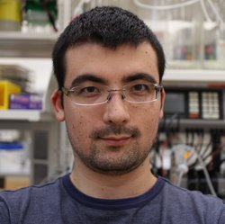
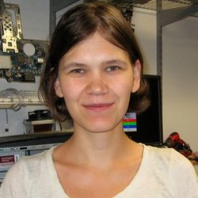
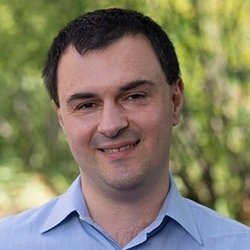

Principal Investigator
Research Staff
Postdoctoral Fellows
Graduate Students
Undergraduate Students
Alumni
Ran Zhang
PhD Student
Now Postdoctoral fellow at
University of Washington
University of Washington
Vicky Yao
PhD Student
Now Assistant Professor at
Rice University
Rice University
Max Homilius
PhD Student
Now Postdoctoral Fellow at
One Brave Idea
One Brave Idea
John Hayward
Senior Software
Engineer
Now backpacking

Jonathan Goya
PhD Student
Now Science and Music Faculty at
Bard Early College
Bard Early College
Salim Chowdhury
Postdoctoral Fellow
Now Research Analyst at
Millennium Management
Millennium Management
Jian Zhou
PhD Student
Now Assistant Professor at
UT Southwestern
UT Southwestern
Ben VanderSluis
Postdoctoral Fellow
Now Data Scientist at
Harris
Harris
Mark Roberts
Data Scientist
Now at Google
Arjun Krishnan
Postdoctoral Fellow
Now Assistant Professor at
Michigan State University
Michigan State University
Qian Zhu
PhD Student
Now Postdoctoral Fellow at
Harvard University
Harvard University
Young-suk Lee
PhD Student
Now Postdoctoral Fellow at
Seoul National University
Seoul National University
Dima Gorenshteyn
PhD Student
Now Lead Data Scientist at
Memorial Sloan Kettering Cancer Center
Memorial Sloan Kettering Cancer Center
Ana Bell (Pop)
PhD Student
Now Lecturer at
Massachusetts Institute of Technology
Massachusetts Institute of Technology
Patrick Bradley
PhD Student
Now Bioinformatics Fellow at
University of California, San Francisco
University of California, San Francisco
Sasha Koruga
Masters Student
Now Software Engineer at
Palantir Technologies
Palantir Technologies
Casey Greene
Postdoctoral Fellow
Now Associate Professor at
University of Pennsylvania
University of Pennsylvania
Yuanfang Guan
PhD Student
Now Assistant Professor at
University of Michigan
University of Michigan

Maria Chikina
PhD Student
Now Assistant Professor at
University of Pittsburgh
University of Pittsburgh
Lars Bongo
Postdoctoral Fellow
Now Professor at
University of Tromsø
University of Tromsø
Charlie Vaske
Postdoctoral Fellow
Now Executive Vice President, Genomic Research
at
NantOmics, LLC
NantOmics, LLC
David Hess
Postdoctoral Fellow
Now Associate Professor at
Santa Clara University
Santa Clara University
Curtis Huttenhower
PhD Student
Now Professor at
Harvard University
Harvard University
Matt Hibbs
PhD Student
Now Associate Professor at
Trinity University
Trinity University
Florian Markowetz
Postdoctoral Fellow
Now Senior Group Leader at
University of Cambridge
University of Cambridge

Edoardo Airoldi
Postdoctoral Fellow
Now Associate Professor at
Harvard University
Harvard University
Zafer Barutcuoglu
PhD Student
Now at Credit Suisse
Chad Myers
PhD Student
Now Associate Professor at
University of Minnesota
University of Minnesota
Collaborators
Alex Lash
Simons Foundation
Simons Foundation
Ihor Lemischka (1953-2017)
Icahn School of Medicine at Mount Sinai
Icahn School of Medicine at Mount Sinai